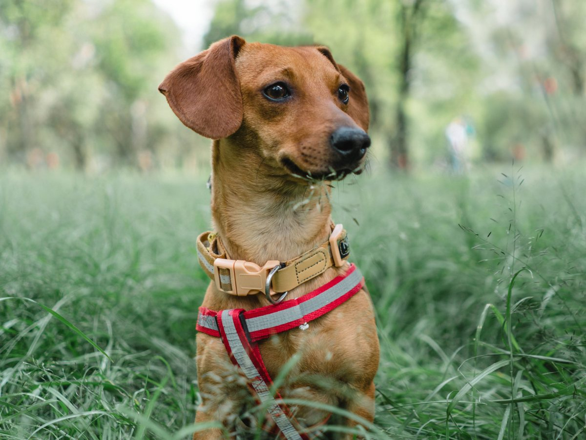
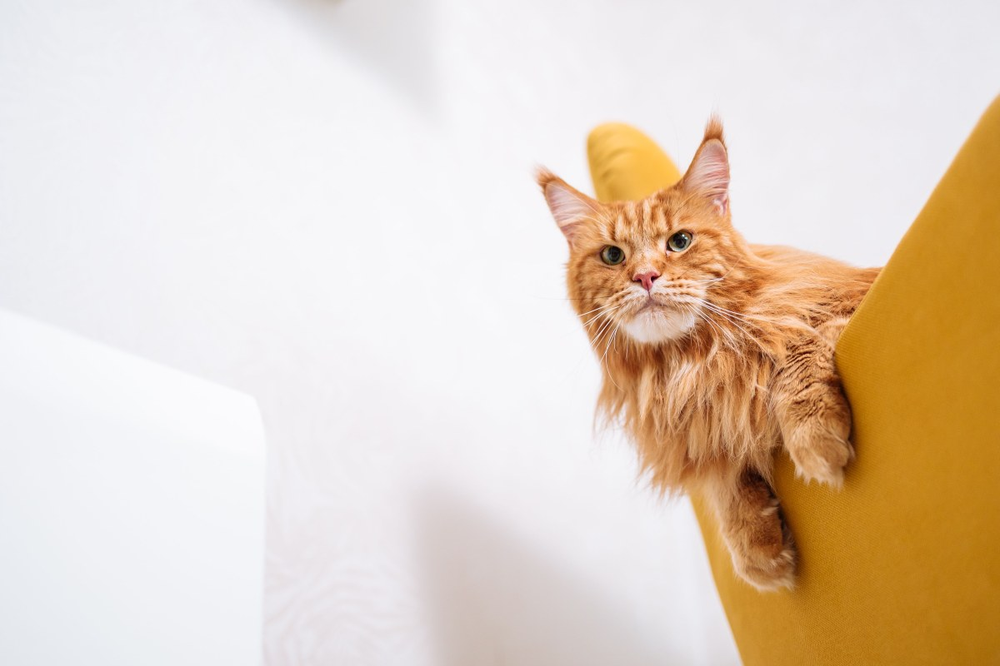
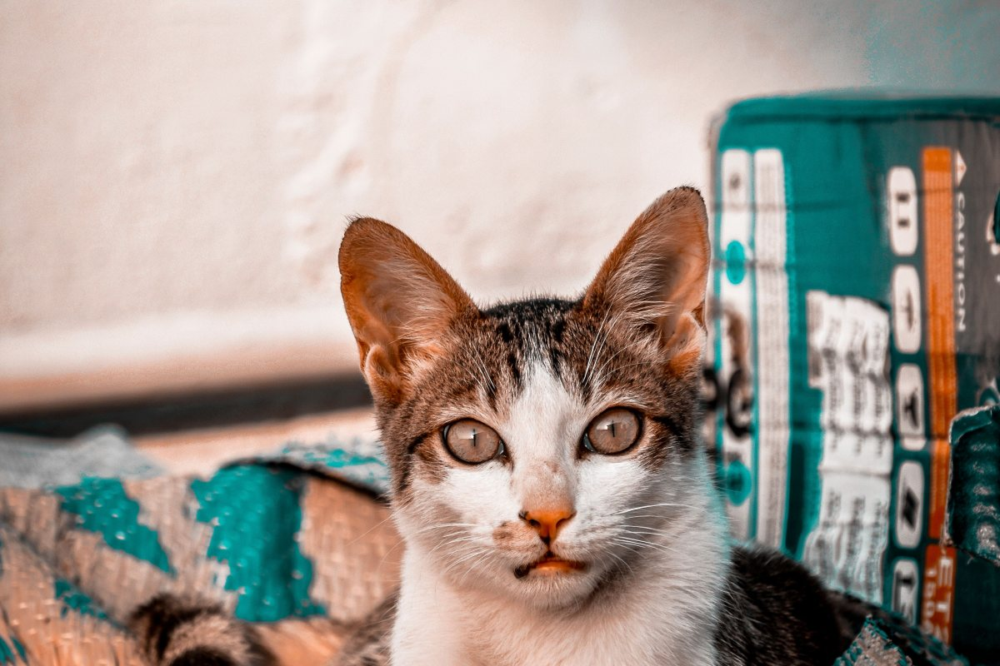
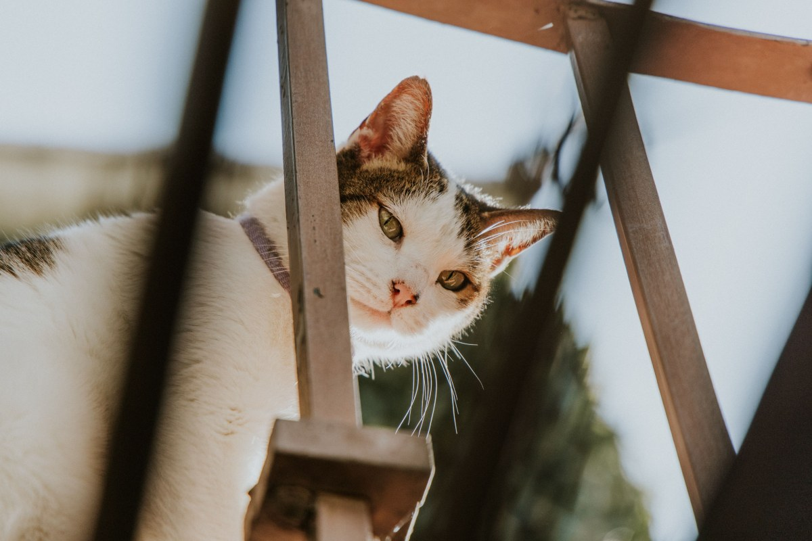

Centro médico veterinario · Padre Las Casas
Todo lo de su mascota, en una sola visita.
Perros y gatos, en Av. Martín Alonqueo 1478.
- 232reseñas en Google
- 4,3de nota
- 6días a la semana, con hora
- 0páginas vivas: su dominio ya no existe
Para no andar de un lado a otro con el perro en brazos
Una visita, cuatro puertas
Entra a la consulta y sale con todo resuelto.
- 01
La consulta
Se revisa, se pesa y se explica qué tiene.
- 02
Los exámenes
Si hacen falta, ahí mismo.
- 03
La farmacia
El remedio recetado, sin salir a buscarlo.
- 04
El alimento
El que le indicaron, en el mesón.
Cómo funciona una visita lo confirma la clínica.
El alimento y el remedio, a diez pasos de la consulta.
En Martín Alonqueo
Lo que se hace aquí
-

Con hora
Consulta
Perros y gatos.
-

Pabellón
Cirugía
Esterilizaciones y más.
-
Hospital
Hospitalización
Para los que se quedan.
-
Con receta
Farmacia
Remedios veterinarios.
-

En el mesón
Alimento
Para cada edad y cada dieta.
-

Al día
Vacunas
Y desparasitación.
Consulta, hospital, farmacia, alimento y cirugía salen de su ficha; el detalle lo confirma la clínica.
La veterinaria del otro lado del puente.
232 reseñas con 4,3
Los pacientes
Perros y gatos de Padre Las Casas



Fotos de referencia: los pacientes de verdad los muestra la clínica.
Dónde estamos
Martín Alonqueo 1478, Padre Las Casas
- Dirección
- Av. Martín Alonqueo 1478
- Teléfono
- 45 254 6324
- Reseñas
- 232 en Google, nota 4,3
- Atiende
- Lunes a sábado, con hora
Si es urgencia, llame antes de cruzar el puente.
Av. Martín Alonqueo 1478, Padre Las Casas Abrir en Google Maps
Para la clínica
Qué es real y qué falta
Lo verificado
El nombre, la dirección, el teléfono, las 232 reseñas con 4,3 y que atiende de lunes a sábado con hora.
Lo de ejemplo
El recorrido de una visita y el detalle de cada servicio.
Lo que falta
El horario exacto, los valores y fotos de la clínica y del equipo.